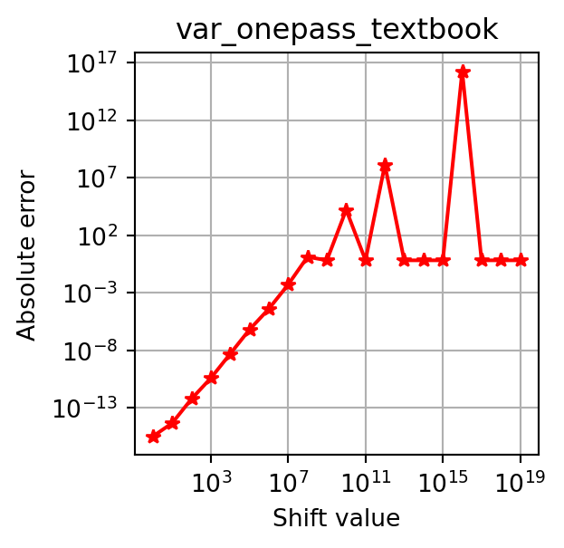
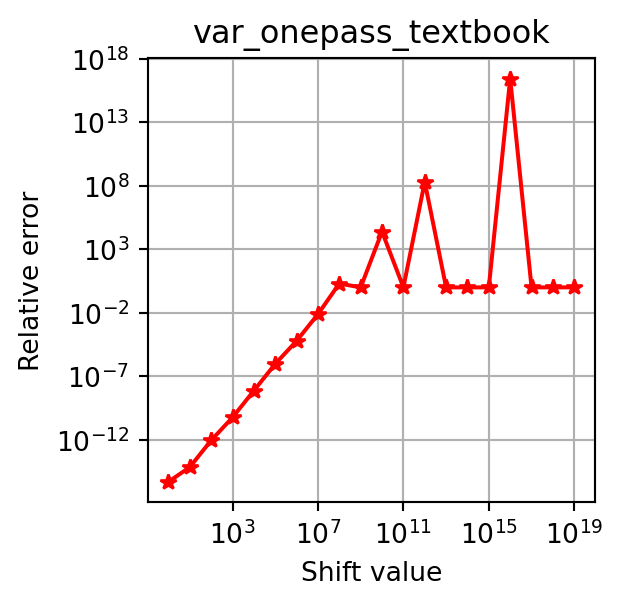

def var_twopass_textbook(x):
n, s = 0, 0
for xi in x:
n += 1
s += xi
mu = s / n
sd = 0
for xi in x:
sd += (xi - mu) ** 2
return sd / nGiven a dataset \{x_1, \ldots, x_n\}, variance measures how much data points deviate from their mean. While the mathematical definition is straightforward, the way we implement variance can have a big impact on numerical stability.
1 Textbook Formulas
The most common definition computes the mean first, then the average squared deviation from it:
\mu = \frac{1}{n} \sum_{i=1}^n x_i,\ \sigma^2 = \frac{1}{n} \sum_{i=1}^n (x_i - \mu)^2. \tag{1}
This requires two passes over the data. For streaming or memory-constrained scenarios, a one-pass formula is often considered:
\sigma^2 = \frac{1}{n} \sum_{i=1}^n x_i^2 - \left(\frac{1}{n} \sum_{i=1}^n x_i\right)^2. \tag{2}
def var_onepass_textbook(x):
n, s, sq = 0, 0, 0
for xi in x:
n += 1
s += xi
sq += xi ** 2
return sq / n - (s / n) ** 2In exact arithmetic, these two formulas are identical. But in floating-point arithmetic, they can yield very different results.
2 Numerical Cancellation
Let’s test both formulas on a simple dataset:
import numpy as np
x = np.array([0., 1., 2.])
print("Two-pass (Textbook):", var_twopass_textbook(x))
print("One-pass (Textbook):", var_onepass_textbook(x))Two-pass (Textbook): 0.6666666666666666
One-pass (Textbook): 0.6666666666666667So far, so good. But if we shift all values by a large constant, the one-pass version quickly breaks down due to cancellation errors:
for shift in [1e3, 1e6, 1e9, 1e12]:
xt = x + shift
print(f"Shift: {shift:.0e}")
print(f"Two-pass (Textbook): {var_twopass_textbook(xt)}")
print(f"One-pass (Textbook): {var_onepass_textbook(xt)}\n")Shift: 1e+03
Two-pass (Textbook): 0.6666666666666666
One-pass (Textbook): 0.6666666666278616
Shift: 1e+06
Two-pass (Textbook): 0.6666666666666666
One-pass (Textbook): 0.6666259765625
Shift: 1e+09
Two-pass (Textbook): 0.6666666666666666
One-pass (Textbook): 0.0
Shift: 1e+12
Two-pass (Textbook): 0.6666666666666666
One-pass (Textbook): -134217728.0
Code
import matplotlib.pyplot as plt
def plot_errors(x, var_func, error_type="absolute"):
ref = np.var(x)
shifts = [10**i for i in range(0, 20)]
errors = []
for shift in shifts:
xt = x + shift
var = var_func(xt)
if error_type == "absolute":
errors.append(abs(var - ref))
elif error_type == "relative":
errors.append(abs(var - ref) / abs(ref))
fig, ax = plt.subplots(figsize=(3, 3))
ax.loglog(shifts, errors, "*-r")
ax.set_xlabel("Shift value")
ax.set_ylabel(f"{error_type.capitalize()} error")
ax.set_title(f"{var_func.__name__}")
ax.grid()plot_errors(x, var_onepass_textbook, error_type="absolute")
plot_errors(x, var_onepass_textbook, error_type="relative")


This instability makes the textbook one-pass formula unsuitable for real-world use.
3 Floating Point Arithmetic
Why does this happen? Because floating-point numbers can only represent a finite number of digits. Squaring a large number, for example, can lose precision:
1000000001.0 ** 2
# 1.000000002000000001e+181.000000002e+18Moreover, floating point numbers cannot exactly represent all values, especially very large numbers, leading to rounding errors.
1000000002000000001.01.000000002e+18Most systems use the IEEE 754 standard. In double precision (64-bit), numbers have 53 bits of precision, so integers larger than 2^{53}-1 (9007199254740991) cannot be represented exactly. For example, adding small increments beyond this threshold reveals precision loss:
print(9007199254740991.0) # correct
print(9007199254740991.0 + 1.0) # still correct
print(9007199254740991.0 + 2.0) # wrong9007199254740991.0
9007199254740992.0
9007199254740992.0The hex representation makes this clear:
print(hex(9007199254740991)) # exact
print(hex(9007199254740992)) # exact
print(hex(9007199254740993)) # last bit lost0x1fffffffffffff
0x20000000000000
0x20000000000001Large numbers like:
print(hex(1000000002000000001))0xde0b6b41e999401also show lost lower bits, which is exactly what causes variance miscalculations.
4 Stable Alternatives
A better one-pass approach is Welford’s algorithm (Welford 1962). Instead of subtracting large similar terms, it incrementally updates the mean \mu_k=\sum_{i=1}^k x_i / k and the squared deviations S_k=\sum_{i=1}^k (x_i - \mu_k)^2 to maintain numerical stability:
\begin{align*} \delta_k &= x_k - \mu_{k-1},\\ \mu_k &= \mu_{k-1} + \delta_k / k,\\ S_k &= S_{k-1} + \delta_k (x_k - \mu_k). \end{align*} \tag{3}
def var_onepass_welford(x):
n, mu, sd = 0, 0, 0
for xi in x:
n += 1
delta = xi - mu
mu += delta / n
sd += delta * (xi - mu)
return sd / nTesting again with shifts:
for shift in [1e3, 1e6, 1e9, 1e12]:
xt = x + shift
print(f"Shift: {shift:.0e}")
print(f"One-pass (Welford): {var_onepass_welford(xt)}\n")Shift: 1e+03
One-pass (Welford): 0.6666666666666666
Shift: 1e+06
One-pass (Welford): 0.6666666666666666
Shift: 1e+09
One-pass (Welford): 0.6666666666666666
Shift: 1e+12
One-pass (Welford): 0.6666666666666666
Welford’s method remains stable even under extreme shifts. Other methods, such as Chan’s algorithm (T. F. Chan, Golub, and LeVeque 1982), are also numerically stable. Classic studies (Ling 1974; Tony F. Chan, Golub, and Leveque 1983) provide detailed comparisons.
References
Chan, T. F., G. H. Golub, and R. J. LeVeque. 1982. “Updating Formulae and a Pairwise Algorithm for Computing Sample Variances.” In COMPSTAT 1982 5th Symposium Held at Toulouse 1982, 30–41. Heidelberg: Physica-Verlag HD. https://doi.org/10.1007/978-3-642-51461-6_3.
Chan, Tony F., Gene H. Golub, and Randall J. Leveque. 1983. “Algorithms for Computing the Sample Variance: Analysis and Recommendations.” The American Statistician 37 (3): 242–47. https://doi.org/10.1080/00031305.1983.10483115.
Ling, Robert F. 1974. “Comparison of Several Algorithms for Computing Sample Means and Variances.” Journal of the American Statistical Association 69 (348): 859–66. https://doi.org/10.1080/01621459.1974.10480219.
Welford, B. P. 1962. “Note on a Method for Calculating Corrected Sums of Squares and Products.” Technometrics 4 (3): 419–20. https://doi.org/10.1080/00401706.1962.10490022.
Citation
BibTeX citation:
@misc{variance,
author = {Xu, Xuefeng},
title = {How to {Compute} {Variance?}},
date = {2025-10-03},
url = {https://xuefeng-xu.github.io/blog/variance.html},
langid = {en}
}
For attribution, please cite this work as:
Xu, Xuefeng. 2025. “How to Compute Variance?” October 3,
2025. https://xuefeng-xu.github.io/blog/variance.html.